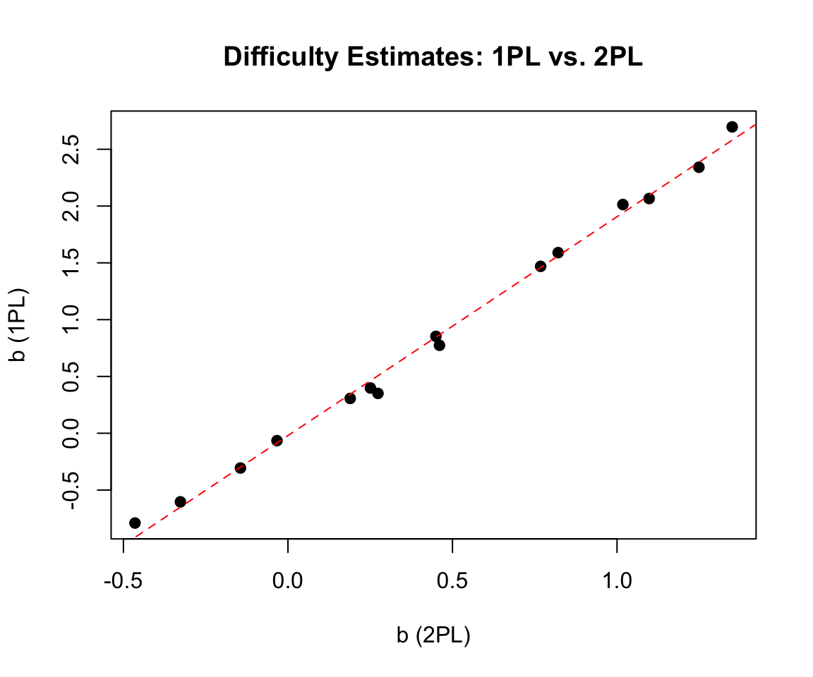
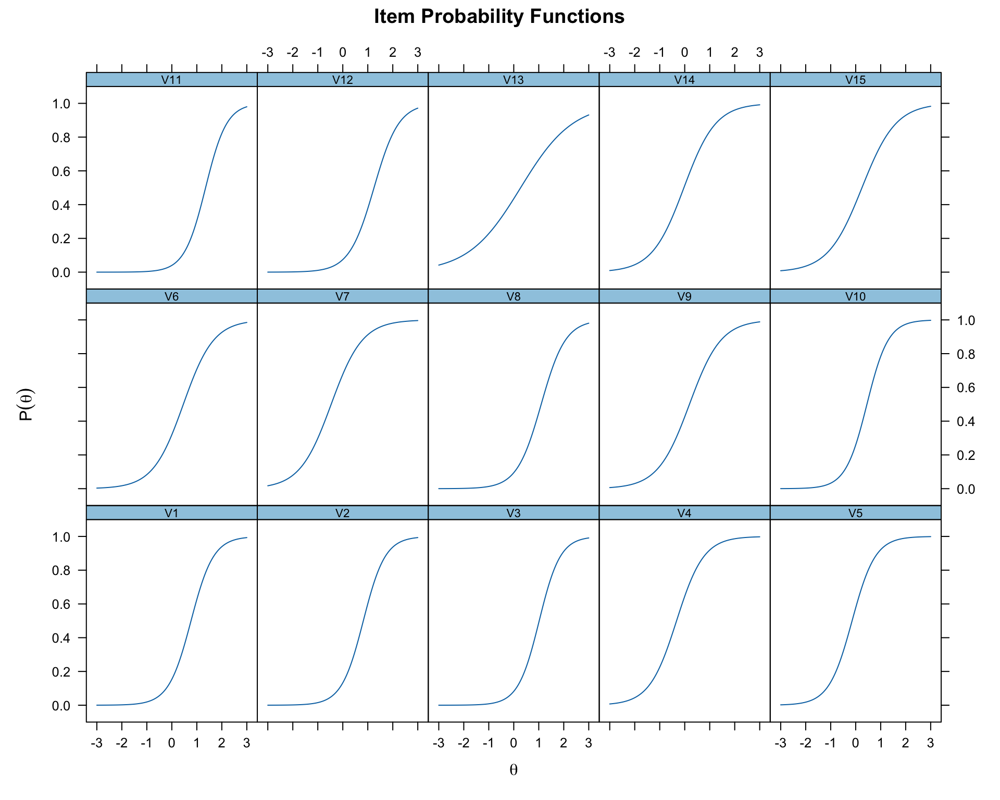
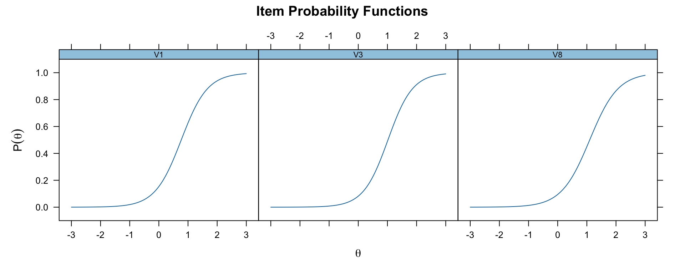
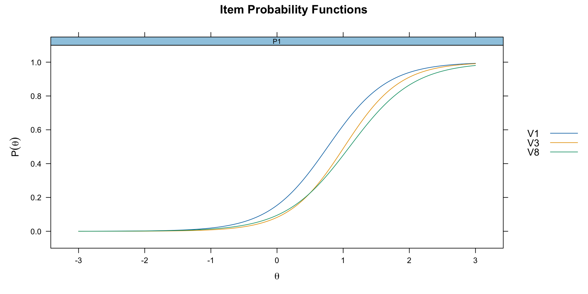
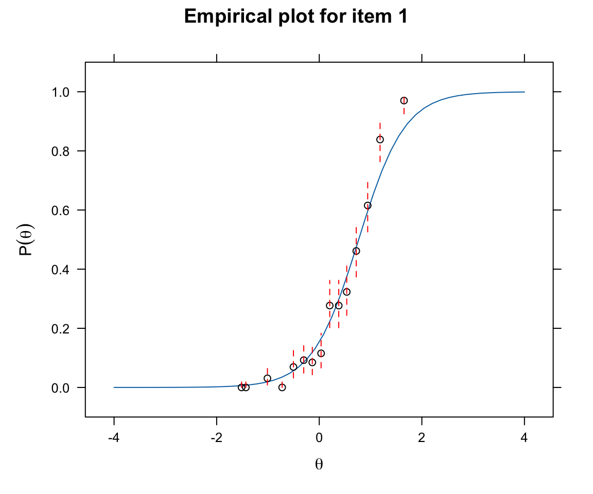
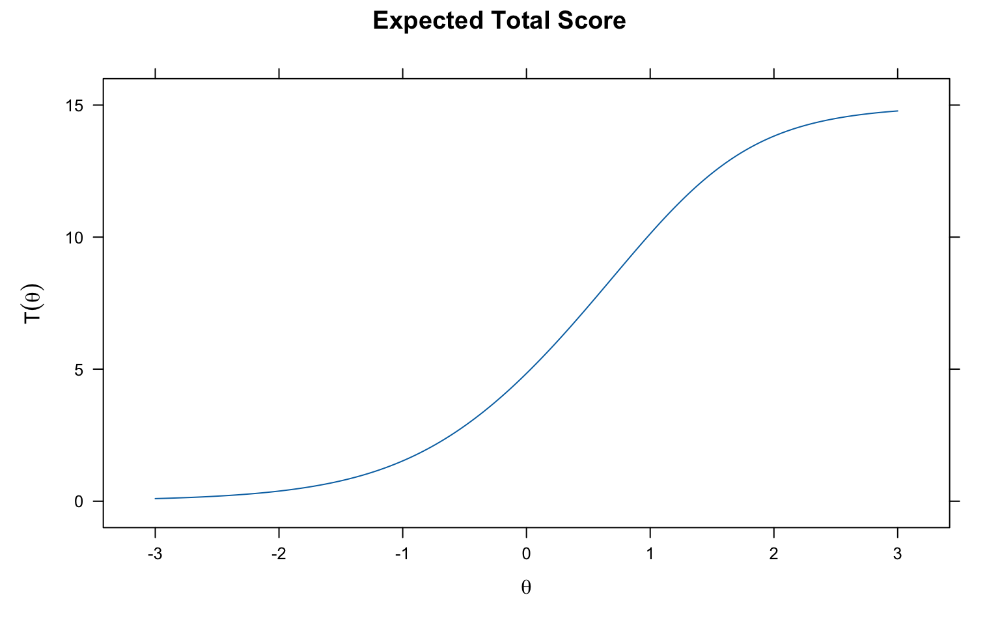
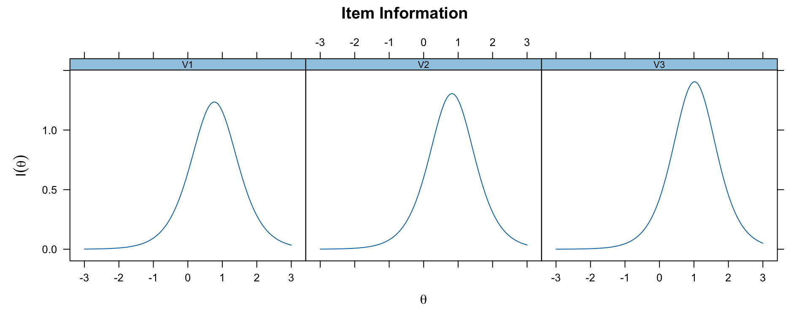
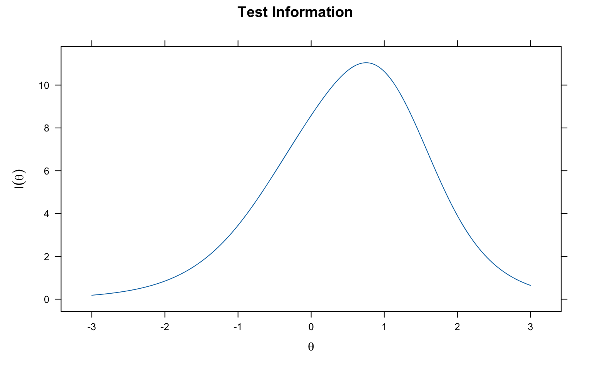
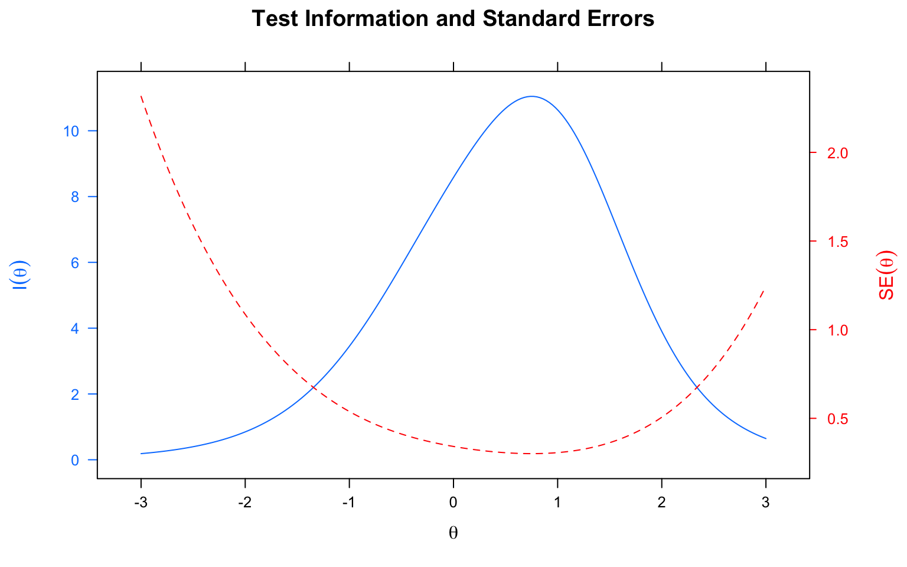
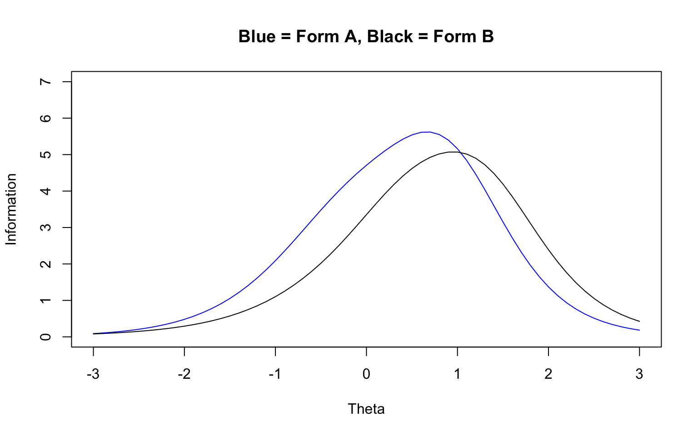

Code
library(mirt)This document is a reference guide for using the mirt package in R to fit IRT models to dichotomously scored item response data. It covers the essential workflow from classical item analysis through model fitting, parameter extraction, and plotting. Use this as a resource when working with different data sets to complete class assignments.
library(mirt)For this guide we use a 15-item data set (pset1_formA.csv). When working with your own data, update the file path accordingly.
data_path <- "../IRT Models for Dichotomously Scored Items/Data/"
forma <- read.csv(paste0(data_path, "pset1_formA.csv"))
forma <- forma[, 1:15] # Use first 15 items
head(forma) V1 V2 V3 V4 V5 V6 V7 V8 V9 V10 V11 V12 V13 V14 V15
1 0 0 0 0 1 1 0 0 1 0 0 0 0 0 1
2 0 0 0 1 1 1 1 1 1 1 0 0 1 0 0
3 0 0 0 0 0 0 0 0 1 0 0 0 0 0 1
4 0 0 0 1 1 1 1 0 0 0 0 0 0 1 0
5 1 1 1 1 1 1 1 1 1 1 1 1 1 1 1
6 0 0 0 1 1 1 1 0 0 0 0 0 0 0 0Always start with descriptive statistics before doing anything fancy. In this context, descriptive stats are classical item statistics.
mirt:itemstatsitemstats(forma)$overall
N mean_total.score sd_total.score ave.r sd.r alpha SEM.alpha
1958 5.652 4.061 0.304 0.112 0.866 1.487
$itemstats
N K mean sd total.r total.r_if_rm alpha_if_rm
V1 1958 2 0.278 0.448 0.608 0.531 0.857
V2 1958 2 0.261 0.440 0.606 0.530 0.857
V3 1958 2 0.208 0.406 0.584 0.513 0.858
V4 1958 2 0.601 0.490 0.606 0.520 0.857
V5 1958 2 0.554 0.497 0.651 0.572 0.854
V6 1958 2 0.380 0.486 0.600 0.515 0.857
V7 1958 2 0.630 0.483 0.594 0.508 0.858
V8 1958 2 0.202 0.402 0.577 0.505 0.858
V9 1958 2 0.455 0.498 0.613 0.527 0.857
V10 1958 2 0.368 0.482 0.672 0.598 0.853
V11 1958 2 0.138 0.345 0.532 0.467 0.860
V12 1958 2 0.172 0.378 0.542 0.471 0.860
V13 1958 2 0.448 0.497 0.475 0.372 0.865
V14 1958 2 0.515 0.500 0.615 0.530 0.857
V15 1958 2 0.440 0.497 0.591 0.502 0.858
$proportions
0 1
V1 0.722 0.278
V2 0.739 0.261
V3 0.792 0.208
V4 0.399 0.601
V5 0.446 0.554
V6 0.620 0.380
V7 0.370 0.630
V8 0.798 0.202
V9 0.545 0.455
V10 0.632 0.368
V11 0.862 0.138
V12 0.828 0.172
V13 0.552 0.448
V14 0.485 0.515
V15 0.560 0.440mirtThe mirt function is used to fit unidimensional IRT models. The key arguments are:
model = 1 specifies a unidimensional modelitemtype specifies the model type: "Rasch", "2PL", or "3PL"method = "EM" specifies the EM algorithm for estimation (this is the default)mirt_1pl <- mirt(forma, model = 1, itemtype = "Rasch", method = "EM")
mirt_2pl <- mirt(forma, model = 1, itemtype = "2PL", method = "EM")
mirt_3pl <- mirt(forma, model = 1, itemtype = "3PL", method = "EM")By default, mirt parameterizes models in slope-intercept form: \(a_i(\theta_p + d_i)\). To get the traditional IRT parameterization \(a_i(\theta_p - b_i)\), use IRTpars = TRUE.
# Slope-intercept form (default)
coef(mirt_2pl, simplify = TRUE)$items
a1 d g u
V1 2.223 -1.707 0 1
V2 2.285 -1.877 0 1
V3 2.371 -2.413 0 1
V4 1.833 0.599 0 1
V5 2.152 0.311 0 1
V6 1.641 -0.756 0 1
V7 1.595 0.741 0 1
V8 2.057 -2.258 0 1
V9 1.580 -0.299 0 1
V10 2.338 -1.052 0 1
V11 2.353 -3.177 0 1
V12 2.018 -2.520 0 1
V13 0.956 -0.262 0 1
V14 1.566 0.052 0 1
V15 1.468 -0.368 0 1
$means
F1
0
$cov
F1
F1 1# Traditional IRT form
coef(mirt_2pl, simplify = TRUE, IRTpars = TRUE)$items
a b g u
V1 2.223 0.768 0 1
V2 2.285 0.821 0 1
V3 2.371 1.018 0 1
V4 1.833 -0.327 0 1
V5 2.152 -0.144 0 1
V6 1.641 0.461 0 1
V7 1.595 -0.465 0 1
V8 2.057 1.098 0 1
V9 1.580 0.189 0 1
V10 2.338 0.450 0 1
V11 2.353 1.350 0 1
V12 2.018 1.249 0 1
V13 0.956 0.274 0 1
V14 1.566 -0.033 0 1
V15 1.468 0.251 0 1
$means
F1
0
$cov
F1
F1 1Note the relationship between the two parameterizations: \(b = -d/a\).
coef_1pl <- coef(mirt_1pl, simplify = TRUE, IRTpars = TRUE)
coef_2pl <- coef(mirt_2pl, simplify = TRUE, IRTpars = TRUE)
coef_3pl <- coef(mirt_3pl, simplify = TRUE, IRTpars = TRUE)
# Extract just the a and b columns for the 2PL
coef_2pl$items[, 1:2] a b
V1 2.2229042 0.76796594
V2 2.2852959 0.82116507
V3 2.3709157 1.01792382
V4 1.8331464 -0.32676666
V5 2.1519449 -0.14432116
V6 1.6413947 0.46051170
V7 1.5948384 -0.46481011
V8 2.0568636 1.09772715
V9 1.5795863 0.18920500
V10 2.3383711 0.44967213
V11 2.3534503 1.35010342
V12 2.0179700 1.24898596
V13 0.9564336 0.27361200
V14 1.5655666 -0.03331578
V15 1.4678540 0.25067126The g and u columns in the output represent the lower asymptote (guessing) and upper asymptote parameters. These are only estimated in the 3PL (and a hypothetical 4PL) model.
round(data.frame(
coef_1pl$items[, 1:2],
coef_2pl$items[, 1:2],
coef_3pl$items[, 1:3]
), 3) a b a.1 b.1 a.2 b.2 g
V1 1 1.469 2.223 0.768 48.255 0.936 0.080
V2 1 1.590 2.285 0.821 47.597 0.950 0.064
V3 1 2.013 2.371 1.018 11.356 1.007 0.044
V4 1 -0.604 1.833 -0.327 1.747 -0.290 0.000
V5 1 -0.306 2.152 -0.144 2.048 -0.095 0.000
V6 1 0.774 1.641 0.461 1.545 0.532 0.000
V7 1 -0.791 1.595 -0.465 1.537 -0.433 0.000
V8 1 2.066 2.057 1.098 1.903 1.186 0.000
V9 1 0.306 1.580 0.189 1.531 0.248 0.000
V10 1 0.853 2.338 0.450 2.139 0.532 0.000
V11 1 2.697 2.353 1.350 2.027 1.470 0.000
V12 1 2.342 2.018 1.249 1.838 1.347 0.000
V13 1 0.351 0.956 0.274 0.932 0.324 0.000
V14 1 -0.065 1.566 -0.033 1.476 0.016 0.000
V15 1 0.398 1.468 0.251 1.412 0.310 0.000Note that the 1PL estimates are on a different scale than the 2PL and 3PL estimates (see the companion document on scale constraints for details). But the \(b\)-values are highly correlated across models—the differences are up to a linear transformation due to scale.
plot(coef_2pl$items[, 2], coef_1pl$items[, 2],
pch = 19, xlab = "b (2PL)", ylab = "b (1PL)",
main = "Difficulty Estimates: 1PL vs. 2PL")
abline(lm(coef_1pl$items[, 2] ~ coef_2pl$items[, 2]), col = "red", lty = 2)
mirtThe mirt package has a powerful built-in plot function with many options. Use help('plot-method') to see all available plot types.
# All items
plot(mirt_2pl, type = 'trace',theta_lim = c(-3, 3))
# Specific items
plot(mirt_2pl, which.items = c(1, 3, 8), type = 'trace',theta_lim = c(-3, 3))
# Overlay specific ICCs on a single plot
plot(mirt_2pl,
type = "trace",
which.items = c(1, 3, 8),
theta_lim = c(-3, 3),
facet_items = FALSE)
The itemfit function with empirical.plot overlays observed response proportions on the model-implied ICC. This is useful for diagnosing item misfit.
itemfit(mirt_2pl, group.bins = 15, empirical.plot = 1,theta_lim = c(-3, 3))
The TCC shows the expected number of correct answers (out of 15) at each ability level.
plot(mirt_2pl,theta_lim = c(-3, 3))
Each item provides a certain amount of “information” about ability at different points on the theta scale.
plot(mirt_2pl, type = 'infotrace', which.items = c(1:3),theta_lim = c(-3, 3))
The test information function is the sum of all item information functions.
plot(mirt_2pl, type = 'info',theta_lim = c(-3, 3))
This combined plot shows both the test information function and the SEM on the same graph. The SEM is the inverse of the square root of the information: \(SEM(\theta) = 1/\sqrt{I(\theta)}\).
plot(mirt_2pl, type = 'infoSE', theta_lim = c(-3, 3))
Say we create two test forms, form A with items 1-7, and form B with items 8-14. Let’s compare test info by form
A<-c(1:7)
B<-c(8:14)
A.info <- testinfo(mirt_2pl, which.items = A, Theta = matrix(seq(-3,3,by=0.1)))
B.info <- testinfo(mirt_2pl, which.items = B, Theta = matrix(seq(-3,3,by=0.1)))
ymax <- round(max(max(A.info), max(B.info)), 0) + 1 # Top end of y-axis
# Plotting information without using the mirt plot function
Theta <- seq(-3, 3, by = 0.1)
plot(Theta, A.info, type = "l", ylim = c(0, ymax), col = "blue",
ylab = "Information", main = "Blue = Form A, Black = Form B")
lines(Theta, B.info, col = "black")
| Task | Command |
|---|---|
| Classical item stats | itemstats(data) |
| Task | Command |
|---|---|
| Fit Rasch model | mirt(data, 1, itemtype = "Rasch") |
| Fit 2PL model | mirt(data, 1, itemtype = "2PL") |
| Fit 3PL model | mirt(data, 1, itemtype = "3PL") |
| Task | Command |
|---|---|
| Get IRT parameters | coef(mod, simplify = TRUE, IRTpars = TRUE) |
| Get slope-intercept form | coef(mod, simplify = TRUE) |
| EAP ability estimates | fscores(mod, method = "EAP") |
| Task | Command |
|---|---|
| Plot all ICCs (faceted) | plot(mod, type = 'trace', theta_lim = c(-3, 3)) |
| Plot specific item ICCs | plot(mod, which.items = c(1, 3), type = 'trace', theta_lim = c(-3, 3)) |
| Overlay ICCs on one plot | plot(mod, which.items = c(1, 3), type = 'trace', facet_items = FALSE) |
| Plot TCC | plot(mod, theta_lim = c(-3, 3)) |
| Plot item information | plot(mod, type = 'infotrace', which.items = 1:3, theta_lim = c(-3, 3)) |
| Plot test information | plot(mod, type = 'info', theta_lim = c(-3, 3)) |
| Plot info + SEM | plot(mod, type = 'infoSE', theta_lim = c(-3, 3)) |
| Custom test info by form | testinfo(mod, which.items = c(1:7), Theta = matrix(seq(-3, 3, by = 0.1))) |
| Check item fit | itemfit(mod, group.bins = 15, empirical.plot = 1, theta_lim = c(-3, 3)) |